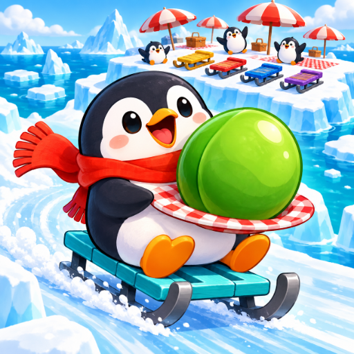

<- all projects

Penguin Picnic Panic
PC
Volume
Live
Everybody brought something weird.
Untangle a traffic jam of penguin sleds before the picnic. Click a sled to send it in the direction of its arrow, but it can only leave when its whole lane is clear, so start with an open lane and work backward through the jam until every penguin is rescued. Each rescue brings a ridiculous snack, a tiny story and a new piece of the island feast. Free undo lets you rethink the order without pressure. 240 sled puzzles with four exit directions and a growing cast of cargo, 15 picnic guests to welcome and 15 very unusual dishes to collect.